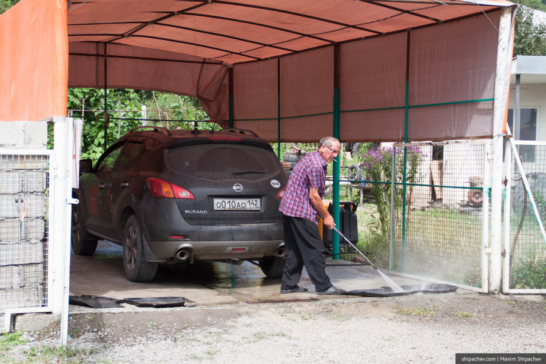

Вчера добрались до села Гудаури. Позади долгая дорога, наконец мы в Грузии.
Хотя с утра в горах почти всегда пасмурно, виды из окна начинают потихоньку завораживать. К тому же, пока собираемся, разъяснивается. Поселок целиком состоит из отелей и хозяин нашего говорит, что зимой тут очень много туристов. Эту ночь мы ночевали в целом отеле одни.
Сразу после выезда из посёлка начинается ремонт дороги, но он непродолжителен. В любом случае машин не очень много. Ехать с открытым от красоты за окном ртом не очень удобно, а по серпантину ещё и небезопасно. Останавливаемся, чтобы оглядеться.
Мы спускаемся с гор в ущелье, внизу которого течёт река Арагви. Мы будем ехать теперь вдоль реки почти до Тбилиси. Реку порой бывает сложно разглядеть, но ширина сухого русла реки и основательность мостов дают понять, что весной река выглядит совсем по-другому.
Мы пока не завтракали, к тому же не очень приятно ехать по таким красивым местам на грязной машине. Останавливаемся в первой попавшейся деревне, чтобы исправить эти недочёты.
У хозяев дома, рядом с которым мы остановились, есть небольшой магазинчик, навес, где они моют машины, к тому же они пекут хачапури, которые тут же рядом с магазином на столике можно съесть. То, что нужно. Хачапури нет готовых, конечно. Пекут тогда, когда есть кому есть.

Пока особо не знаем куда поедем, решаем держать курс на Тбилиси, а там видно будет. Тем более от границы с Россией до Тбилиси поворачивать некуда. Второе визуальное потрясение после гор — водохранилище Жинвали.
Жинвальское водохранилище возникло в 1985 году, когда при строительстве Жинвальской ГЭС была перекрыта плотиной река Арагви. Для этого, кстати, пришлось затопить несколько деревень, которые так до сих пор и стоят на дне водохранилища. Нет, без жителей, конечно.
Водохранилище играет очень важную роль в энергосистеме Грузии. Жинвальская ГЭС вырабатывает в год 484 млн.кВт/ч электроэнергии, а само водохранилище снабжает питьевой водой города Мцхета, Тбилиси и Рустави. Нужно отметить, что несмотря на стратегическую важность объекта, собственником ГЭС является швейцарская компания Multiplex Solutions, купившая её в 2007 году за $85 млн.
На берегу водохранилища стоит крепость Ананури. Крепость была построена ещё в 16 веке и сегодня от неё остались только часть крепостной стены, небольшая внутренняя часть и три храма.
До Тбилиси порядка 70 километров (правда смешные расстояния?) и по пути мы заезжаем в город Мцхета, в котором расположен один из духовных символов Грузии, кафедральный храм Светицховели.
По дороге до Мцхеты мы впервые встретили дорожный знак, который может вначале озадачить жителя России, но вполне логичен для жителя Грузии. Дело в том, что территория Абхазии не считается в Грузии другим государством. Грузины не признают отделения Абхазии даже вот на таком уровне. Знаки с расстоянием до Сухуми и указанием маршрута остались с момента отделения Абхазии на своих местах, несмотря на то, что отношений (и действующего автомобильного сообщения) между странами сейчас нет. Впрочем дорога до Сухуми, это та же дорога до Батуми и черноморского побережья вообще, поэтому вскоре мы поедем именно по ней.
Храм Светицховели называется так от свети «столб» и цховели «живой». То есть столб живой, животворный. Был основан в 1010 году. Считается, что стоит храм в месте, где был зарыт в землю хитон Иисуса Христа. Потом на этом месте вырос кедр. В IV веке кедр оказался в саду царского дворца, который построили неподалёку. Святая Нина, христианская просветительница, почитаемая в Грузии, когда пришла в Грузию, 9 месяцев прожила в доме садовника этого сада. Потом так вышло, что кедр этот срубили для строительства храма. Из кедра сделали столб, но никто не смог установить этот столб руками. Чуть позже столб установился чудесным образом сам, неким чудесным образом. Этот сюжет лёг в основу многих икон в грузинской иконографии. Храм Светицховели с момента основания служил местом коронования и усыпальницей для представителей царского рода Багратионов. Здесь же, в марте 2007 года, прошло отпевание первого грузинского президента Звиада Гамсахурдиа.
После Мцхеты, по пути в Тбилиси, заезжаем в пожалуй самый известный грузинский монастырь — Джвари. Во-первых, говорят, его воспел поэт Михаил Лермонов в «Мцырях», что, вероятно, неправда. Во-вторых, от монастыря открывается очередной потрясающий вид.
Немного лет тому назад,
Там, где, сливаяся, шумят,
Обнявшись, будто две сестры,
Струи Арагвы и Куры
Едем в столицу Грузии, Тбилиси. Город напоминает областной центр в российских масштабах. Он всего на четверть больше Кемерова по площади.

Едем в самый центр, чтобы подняться на канатной дороге и погулять по парку Рике. Парк Рике это тихое место в самом центре Старого города, многие достопримечательности которого построены совсем недавно. Канатная дорога тоже современная, открыта в 2012 году.
В советское время в Тбилиси существовало целых шесть канатных дорог. На одной из них, в 1990 году произошла самая тяжёлая в СССР авария на канатных дорогах. Из-за перегрузки и неправильной эксплуатации несколько кабин сорвались с троса и начали скользить вниз, срывая все новые кабины, пока не столкнулись с бетонной стеной базовой станции. Один человек выпал из кабины прямо на улицу Тбилиси. Ещё 19 погибли от удара со станцией. В 90-е годы все «канатки» были закрыты.
Пешеходный Мост Мира через реку Кура был построен по инициативе президента Грузии Михаила Саакашвили и официально открыт 6 мая 2010 года.
Насчёт строящегося театра музыки и драмы в виде двух гигантских труб уже долгие годы не утихают споры. Одни считают, что это красивое современное решение, другие говорят, что трубы (на самом деле это стилизованные кувшины) убивают дух старого центра. Театр строится уже 3 года, причём стройку периодически останавливают.
Рядом с парком есть платная подземная автомобильная парковка. Когда я заезжал на неё то изрядно напугал охранников. Антенна рации оказалась гораздо выше потолков и начала со страшным звуком биться о короба вентиляции и светильники. Но всё обошлось без жертв среди людей и светильников.
Всё-таки мы долго добирались и решаем в первую очередь поехать на море.
Выезжаем из Тбилиси, проезжаем мимо родины Сталина, города Гори, и останавливаемся на ночлег в мотеле Шёлковый путь.